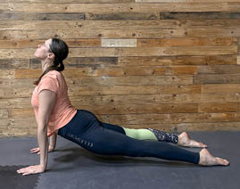

Aktywność fizyczna
3.4.9. Pies z głową w górę
Pies z głową w górę (rycina V.3.14) – pozycja wzmacnia plecy, ramiona i nadgarstki oraz otwiera klatkę piersiową. Zwiększa zakres wyprostu w odcinku piersiowym kręgosłupa, co ma wpływ na oddychanie i pojemność płuc. Rozciągają się mięśnie brzucha, zginacz biodra i przednia grupa mięśni uda:
Rycina V.3.14.
Pies z głową w górę
430
